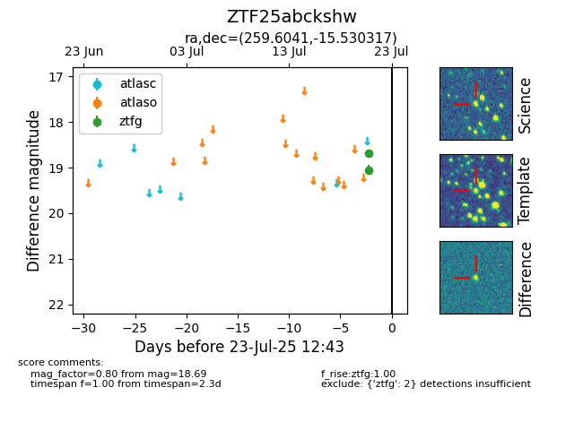

Target ZTF25abckshw at 2025-07-23 12:43, see:
FINK: fink-portal.org/ZTF25abckshw
Lasair: lasair-ztf.lsst.ac.uk/objects/ZTF25abckshw
ALeRCE: alerce.online/object/ZTF25abckshw
alt names
ZTF25abckshw (ztf,fink)
coordinates:
equatorial (ra, dec) = (259.6041,-15.53032)
galactic (l, b) = (7.9864,+12.50212)
photometry
last ztfg=18.69
2 ztfg detections
